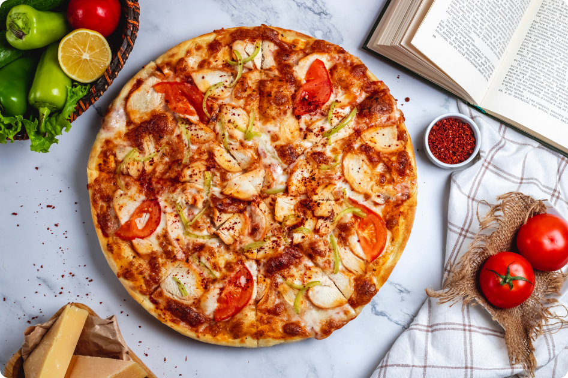

Pizza (Italian: Neapolitan) is a dish of Italian origin consisting of a usually round, flat base of leavened wheat-based dough topped with tomatoes, cheese, and often various other ingredients (such as various types of sausage, anchovies, mushrooms, onions, olives, vegetables, meat, ham, etc.), which is then baked at a high temperature, traditionally in a wood-fired oven. A small Pizza is sometimes called a pizzetta. A person who makes Pizza is known as a pizzaiolo.
The term Pizza was first recorded in the 10th century in a Latin manuscript from the Southern Italian town of Gaeta in Lazio, on the border with Campania. Modern Pizza was invented in Naples, and the dish and its variants have since become popular in many countries. It has become one of the most popular foods in the world and a common fast food item in Europe, North America and Australasia; available at pizzerias (restaurants specializing in pizza), restaurants offering Mediterranean cuisine, via Pizza delivery, and as street food. Various food companies sell ready-baked pizzas, which may be frozen, in grocery stores, to be reheated in a home oven.
In 2017, the world Pizza market was US$128 billion, and in the US it was $44 billion spread over 76,000 pizzerias. Overall, 13% of the U.S. population aged 2 years and over consumed Pizza on any given day.
Etymology
The word "pizza" first appeared in a Latin text from the town of Gaeta, then still part of the Byzantine Empire, in 997 AD; the text states that a tenant of certain property is to give the bishop of Gaeta duodecim pizze ("twelve pizzas") every Christmas Day, and another twelve every Easter Sunday.
History
Chapter 1
Foods similar to Pizza have been made since the Neolithic Age. Records of people adding other ingredients to bread to make it more flavorful can be found throughout ancient history. In the 6th century BC, the Persian soldiers of the Achaemenid Empire during the rule of Darius the Great baked flatbreads with cheese and dates on top of their battle shields and the ancient Greeks supplemented their bread with oils, herbs, and cheese. An early reference to a pizza-like food occurs in the Aeneid, when Celaeno, queen of the Harpies, foretells that the Trojans would not find peace until they are forced by hunger to eat their tables (Book III). In Book VII, Aeneas and his men are served a meal that includes round cakes (like pita bread) topped with cooked vegetables. When they eat the bread, they realize that these are the "tables" prophesied by Celaeno. The first mention of the word "pizza" comes from a notarial document written in Latin and dating to May 997 AD from Gaeta, demanding a payment of "twelve pizzas, a pork shoulder, and a pork kidney on Christmas Day, and 12 pizzas and a couple of chickens on Easter Day."
Chapter 2
Modern Pizza evolved from similar flatbread dishes in Naples, Italy, in the 18th or early 19th century. Before that time, flatbread was often topped with ingredients such as garlic, salt, lard, and cheese. It is uncertain when tomatoes were first added and there are many conflicting claims. Until about 1830, Pizza was sold from open-air stands and out of Pizza bakeries.
Preparation
Chapter 1
In restaurants, Pizza can be baked in an oven with fire bricks above the heat source, an electric deck oven, a conveyor belt oven, or, in traditional style in a wood or coal-fired brick oven. The Pizza is slid into the oven on a long paddle, called a peel, and baked directly on hot bricks, a screen (a round metal grate, typically aluminum), or whatever the oven surface is. Before use, a peel is typically sprinkled with cornmeal to allow the Pizza to easily slide on and off it. When made at home, a Pizza can be baked on a Pizza stone in a regular oven to reproduce some of the heating effect of a brick oven. Cooking directly on a metal surface results in too rapid heat transfer to the crust, burning it. Some home chefs use a wood-fired Pizza oven, usually installed outdoors. As in restaurants, these are often dome-shaped, as Pizza ovens have been for centuries, in order to achieve even heat distribution. Another variation is grilled pizza, in which the Pizza is baked directly on a barbecue grill. Greek pizza, like deep dish Chicago and Sicilian style pizza, is baked in a pan rather than directly on the bricks of the Pizza oven.
Chapter 2
The bottom of the pizza, called the "crust", may vary widely according to style – thin as in a typical hand-tossed Neapolitan Pizza or thick as in a deep-dish Chicago-style. It is traditionally plain, but may also be seasoned with garlic or herbs, or stuffed with cheese. The outer edge of the Pizza is sometimes referred to as the cornicione. Some Pizza dough contains sugar, to help its yeast rise and enhance browning of the crust.
Chapter 3
Mozzarella cheese is commonly used on pizza, with the buffalo mozzarella produced in the surroundings of Naples. Other cheeses are also used, particularly Italian cheeses including provolone, pecorino romano, ricotta, and scamorza. Less expensive processed cheeses or cheese analogues have been developed for mass-market pizzas to produce desirable qualities like browning, melting, stretchiness, consistent fat and moisture content, and stable shelf life. This quest to create the ideal and economical Pizza cheese has involved many studies and experiments analyzing the impact of vegetable oil, manufacturing and culture processes, denatured whey proteins, and other changes in manufacture. In 1997, it was estimated that annual production of Pizza cheese was 1 million metric tons (1,100,000 short tons) in the U.S. and 100,000 metric tons (110,000 short tons) in Europe.
By region of origin
Italy
Stray received "generally favorable reviews" according to review aggregator Metacritic, based on 94 reviews for PlayStation 5 and 39 reviews for Windows. Chris Scullion of Video Games Chronicle considered it one of Annapurna Interactive's best releases, and Andrew Webster of The Verge named it among the best games of the year to date. VG247's Kelsey Raynor described it as "a touching tale of loss, loneliness, environmental destruction", and Ars Technica's Sam Machkovech declared it a blend of the "eerie, atmospheric exploration" of Half-Life (1998) and the "childlike whimsy of a classic Studio Ghibli film". Highly anticipated following its announcement, the game topped Steam's wishlist charts before release; it broke Annapurna Interactive's record for concurrent Steam players upon release, with over 62,000 players, and became the highest user-rated game of the year on the platform. Videos of cats watching footage of Stray went viral after the game's release, with the dedicated Twitter account @CatsWatchStray garnering over 32,000 followers.
United States
Critics praised the game's graphical quality and art design, and several particularly lauded its use of lighting. Alyse Stanley of The Washington Post described Stray as "a master class in environmental story telling and level design", lauding the subtle directions provided to the player. Bill Lavoy of Shacknews wrote that the game "has one of the most beautifully designed worlds we've ever seen", praising the attention to detail in each environment, though criticising the lack of graphical settings. Kotaku's Ari Notis likened the cinematic cutscenes to "prestigious games from top-flight studios like Naughty Dog". Sam Loveridge of GamesRadar+ found the atmosphere to be unique among recent releases, describing the world as "a stunning place to just exist in"; Blake Hester of Game Informer similarly praised the enjoyability of exploring the world. Push Square's Stephen Tailby wrote that the game "conveys a melancholic, hopeful atmosphere". NME's Jordan Oloman considered the worldbuilding the strongest element, though noted that it failed to reach levels of intelligence or subtlety like Nier: Automata (2017). VentureBeat's Rachel Kaser found the Zurk-infested levels among the worst visually, and some reviewers noted minor glitches. William Hughes of The A.V. Club felt that the concept of the underground city populated by robots felt like a "Lego stack of ready-made video game tropes". Kotaku's Sisi Jang found Stray to be a troubling example of techno-orientalism.
Argentina
Katharine Castle of Rock, Paper, Shotgun determined that assuming control of a cat "is at least 50% of the appeal here". The realistic recreation of cat behaviour in the gameplay received widespread praise; critics lauded the animation and easy controls, and the immersion of the movement and navigation, though some noted occasionally awkward controls and camera angles while navigating. VG247's Raynor was prepared for a repetitive gameplay system, but ultimately found that it maintained consistent enjoyment. Keza MacDonald of The Guardian considered Stray "an excellent example of how a change of perspective can enliven a fictional setting to which we've become habituated". Scullion of Video Games Chronicle found the platforming to be "simple but extremely effective", and Alessandro Barbosa of GameSpot commended the balanced pacing between the gameplay sequences. Pauline Leclercq of Jeuxvideo.com felt that the puzzles generally lacked difficulty, but improved in the game's second half, while Hughes of The A.V. Club found it repetitive over time. PCMag's Gabriel Zamora noted disappointment at the lack of choice while platforming, and Electronic Gaming Monthly's Josh Harmon wrote that the core gameplay loop of objectives and puzzles "feels distinctly uncatlike".